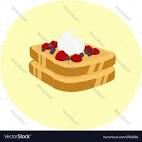

French Toast

Description
French toast is a classic breakfast dish made by dipping slices of bread into a mixture of eggs and milk, then frying them until golden brown. It is often flavored with cinnamon, vanilla, and sugar, and served with syrup, fruit, or whipped cream.
Ingredients
- Eggs
- Milk
- Vanilla and cinnamon
- Salt
- Butter
Steps
- Whisk milk, eggs, vanilla, cinnamon, and salt together in a shallow bowl
- Lightly butter a griddle or skillet and heat over medium-high heat
- Dunk bread in the egg mixture, soaking both sides
- Transfer to the hot skillet and cook until golden, 3 to 4 minutes per side
- Serve hot!